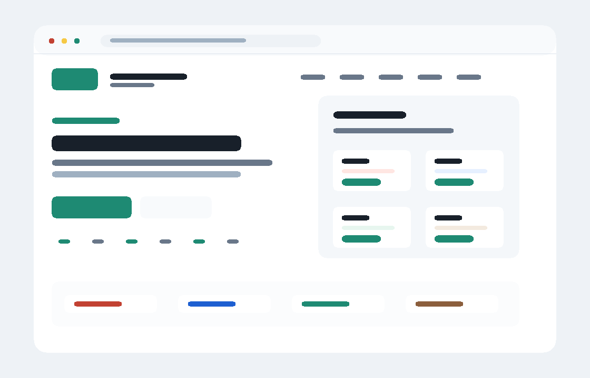

Claude Code
Anthropic 的终端编码代理，用于在本地项目里读代码、改代码和运行命令。
- 命令
claude- 包名
@anthropic-ai/claude-code
国内外浏览器可打开 · 无外部 CDN 依赖
一个纯静态网页下载中心，按 CCSwitch、Gemini CLI、Codex 和 Claude Code 分门别类提供官方正版下载入口。

每个分类都指向官方 npm 或 GitHub 发布源，本站不二次打包。
Anthropic 的终端编码代理，用于在本地项目里读代码、改代码和运行命令。
claude@anthropic-ai/claude-codeOpenAI 的本地编码代理，适合代码生成、修改、调试和仓库内任务处理。
codex@openai/codexGoogle Gemini 的命令行工具，用于在终端中调用 Gemini 能力和处理开发任务。
gemini@google/gemini-cliClaude Code 配置切换工具，适合管理不同项目、团队或角色的配置 Profile。
ccswitchccswitch以下链接直接指向官方发布源。
用于管理 Claude Code 配置 Profile。下载来自 npm 官方注册表或项目官方页面。
npm package: ccswitch
用于在终端调用 Gemini。下载来自 npm 官方注册表或 Google 官方 GitHub Release。
npm package: @google/gemini-cli
OpenAI 本地编码代理。下载来自 npm 官方注册表或 OpenAI 官方 GitHub Release。
npm package: @openai/codex
Anthropic 终端编码代理。下载来自 npm 官方注册表或 Anthropic 官方说明页。
npm package: @anthropic-ai/claude-code
安装完成后，打开终端，先进入你要处理的项目文件夹，然后输入对应命令即可启动。
先进入项目目录，再运行 AI Agent 命令。
cd ~/你的项目目录
先进入项目目录，再运行 AI Agent 命令。
cd "C:\Users\你的用户名\你的项目目录"
在终端输入下面这个命令即可打开，第一次启动会按提示登录。
claude
在终端输入下面这个命令即可打开，按提示登录或配置账号。
codex
在终端输入下面这个命令即可打开，也可以用一次性提问命令。
gemini
一次性提问
gemini -p "帮我解释这个项目"
CCSwitch 不是 AI Agent，它用于切换 Claude Code 配置。
ccswitch init
切换配置
ccswitch switch
command not found 或“不是内部或外部命令”，说明工具还没有安装成功，或 npm 全局命令目录没有加入 PATH。
仓库已包含自动同步工作流，可把官方 npm 包同步到 Cloudflare R2。
curl -fsSL https://你的R2域名/install.sh | bash -s -- codex
curl -fsSL https://你的R2域名/install.sh | bash -s -- claude-code
curl -fsSL https://你的R2域名/install.sh | bash -s -- gemini-cli
curl -fsSL https://你的R2域名/install.sh | bash -s -- ccswitch
iwr https://你的R2域名/install.ps1 -OutFile $env:TEMP\ai-hub-install.ps1
powershell -ExecutionPolicy Bypass -File $env:TEMP\ai-hub-install.ps1 codex